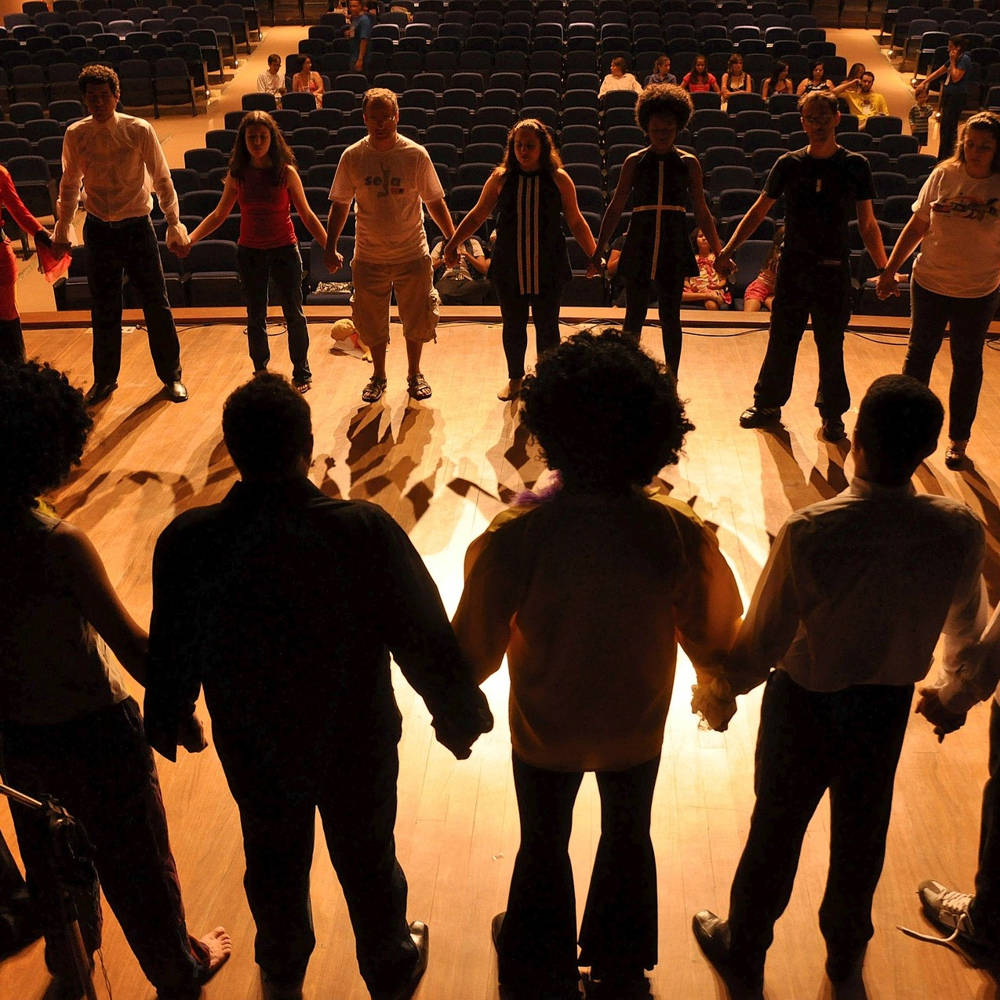
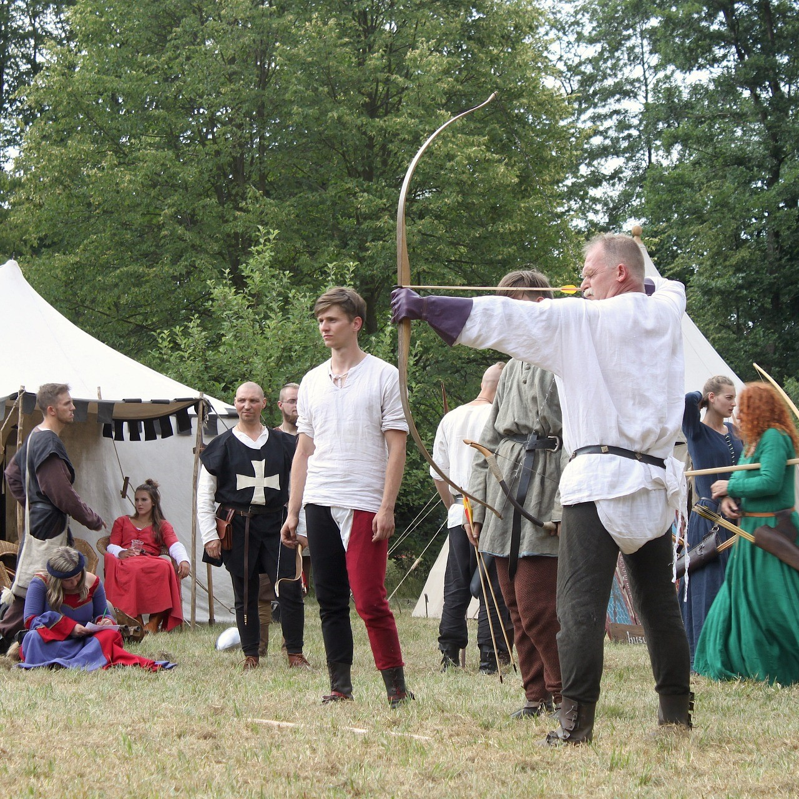
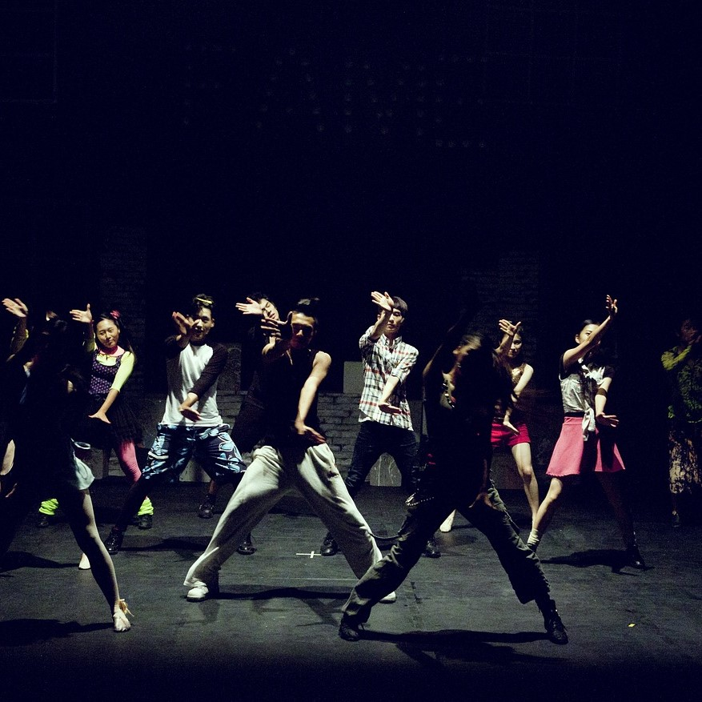

Kreatív írás és forgatókönyvírás
Írj lenyűgöző történeteket és forgatókönyveket! Ezen a kurzuson megtanulhatod, hogyan alkoss érdekes és izgalmas karaktereket, hogyan építsd fel a történetedet és hogyan írj párbeszédeket, amelyek megragadják az olvasó figyelmét. Emellett betekintést nyerhetsz a forgatókönyvírás világába, ahol megismerkedhetsz a filmes és televíziós írás technikáival, valamint a jelenetírás és a történetmesélés fortélyaival.

Dráma és színjátszás
Lépj színpadra és mutasd meg tehetségedet! A drámafoglalkozások során elsajátíthatod a színjátszás alapvető technikáit, beleértve a szerepjátékot, az improvizációt és a karakterfejlesztést. Tanulj meg kifejezően mozogni és beszélni, és fedezd fel, hogyan hozhatsz létre érzelmileg gazdag és hiteles előadásokat. Emellett lehetőséged nyílik részt venni közös színdarabokban és előadásokban, ahol valódi színházi élményben lehet részed.
Önismeret
Ismerd meg jobban önmagadat! Az önismereti foglalkozások során különböző tesztek és gyakorlatok segítségével felfedezheted személyiséged mélyebb rétegeit, erősségeidet és gyengeségeidet. Tanulj meg hatékony önreflexiót végezni, és fedezd fel, hogyan használhatod az önismeretet a személyes és szakmai fejlődésed érdekében. Az önismeret fejlesztése segít abban, hogy magabiztosabbá válj, jobban megértsd magadat és másokat, és hatékonyabban tudj kommunikálni és együttműködni.

Mozgás és sport
Legyél aktív és sportos! A mozgás és sport foglalkozások során különböző sportágakkal ismerkedhetsz meg, beleértve a csapatsportokat és az egyéni sportokat is. Fejleszd fizikai erőnlétedet, állóképességedet és koordinációdat, miközben megtanulod a csapatmunka és a kitartás fontosságát. A sport nemcsak a testi egészségedet javítja, hanem hozzájárul a mentális és érzelmi jólétedhez is, segítve a stressz kezelésében és a pozitív önértékelés kialakításában.
Tánc
Mozogj a ritmusra és fejezd ki magad tánccal! A táncfoglalkozások során különböző táncstílusokat tanulhatsz meg, mint például a klasszikus balett, a kortárs tánc, a hip-hop és a társastánc. Fejleszd ritmusérzékedet, testtudatosságodat és koordinációdat, miközben szabadon engeded kreativitásodat és érzelmeidet a mozgásban. A tánc kiváló eszköz az önkifejezésre, és lehetőséget ad arra, hogy új barátokat szerezz és részt vegyél közös előadásokban.

Beszédkészség és szinkronizálás
Fejleszd kommunikációs képességeidet! A beszédkészség és szinkronizálás foglalkozások során megtanulhatod, hogyan fejezd ki magad hatékonyan és magabiztosan különböző helyzetekben. Gyakorold a nyilvános beszédet, a retorikát és az érveléstechnikákat, és fedezd fel, hogyan használd hangodat és kifejezőkészségedet a szinkronizálásban és más előadói műfajokban. A jó beszédkészség nemcsak a színpadon, hanem az élet számos területén is előnyöket jelent.
Ének és zene
Hagyd, hogy a zene és az ének szárnyakat adjon! Az ének- és zenei foglalkozások során különböző zenei stílusokat és technikákat sajátíthatsz el, beleértve az éneklést, a hangszeres játékot és a zenei improvizációt. Fejleszd zenei érzékedet, ritmusérzékedet és előadói képességeidet, miközben felfedezed a zene örömét és erejét. A közös zenélés és éneklés lehetőséget ad arra, hogy új barátokat szerezz és részt vegyél közös koncertekben és előadásokban.